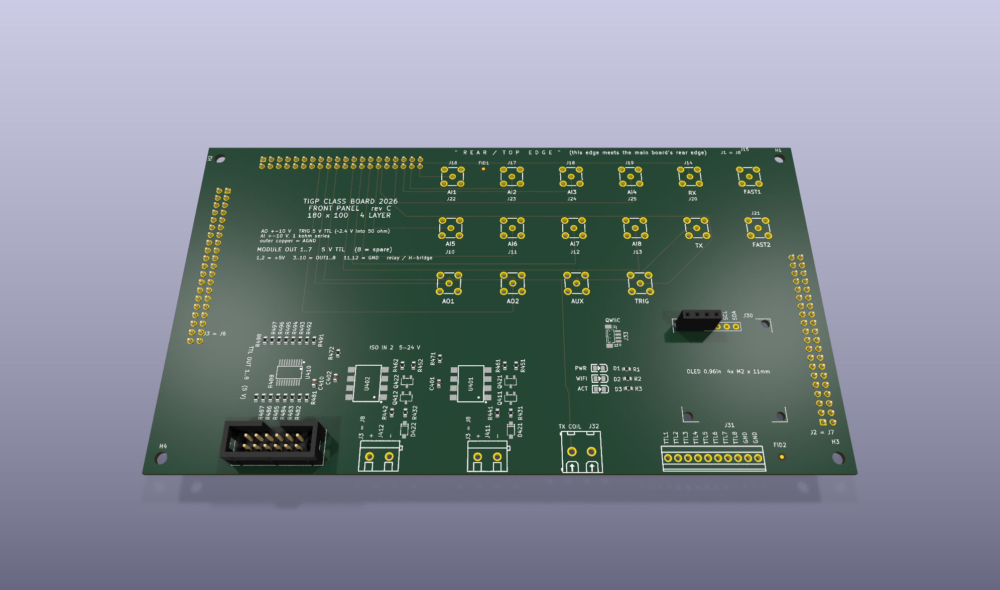
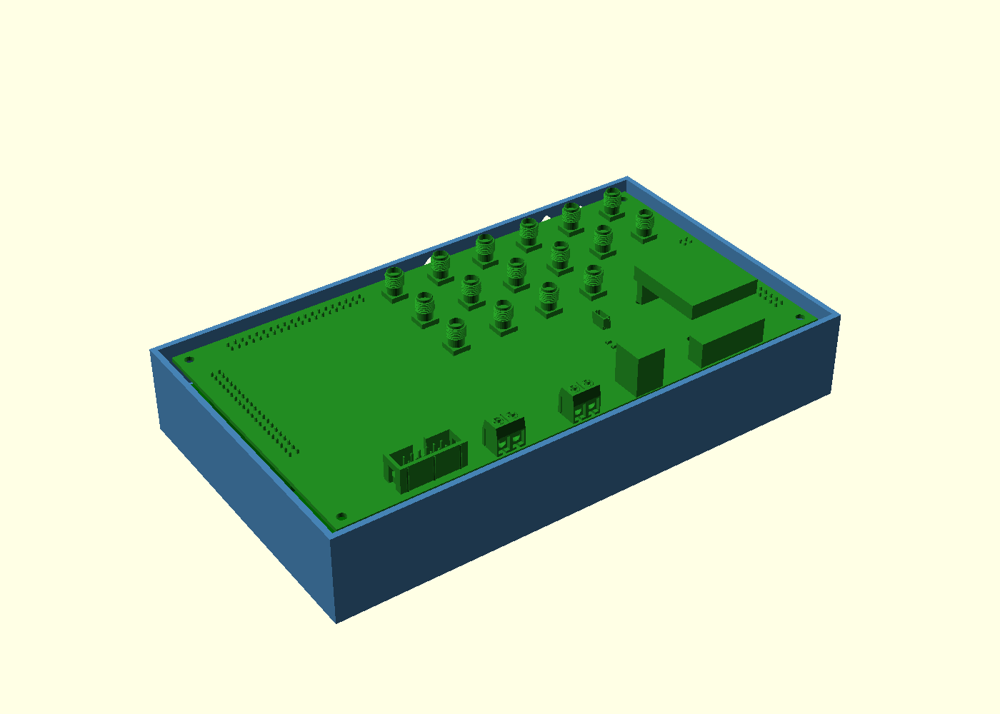
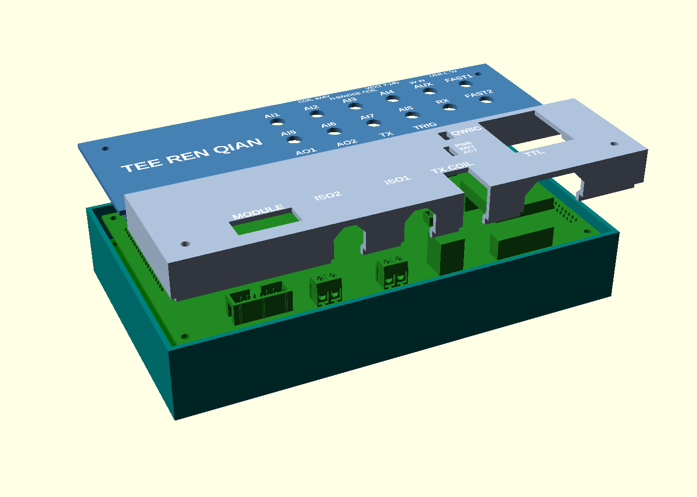
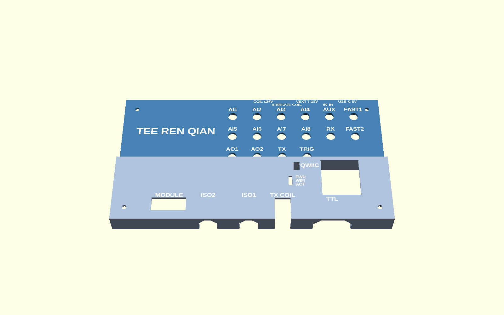
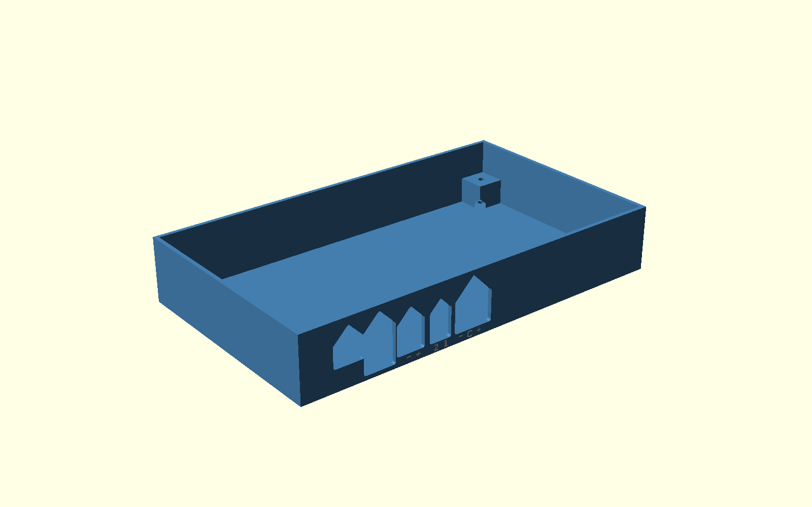

Project 3 · Basic Skills for Experimentalists · TIGP 2026
A class of students built one instrument: a small NMR console on an ESP32-S3. A 2 mT field, a bottle of water, an 89 kHz pulse, and the free induction decay that comes back turned into a spectrum on a phone. This is the analog section — everything the instrument hears on its way in, and everything it sends on its way out.
The front panel is the face of the instrument and the board every signal leaves through. It is routed by four students, divided by nets rather than by area, because every panel net runs from a link header at the edge to a connector in the middle — a geometric cut would leave half a trace on every boundary.
Section A is the analog group: the eight analog inputs, the two analog outputs, the auxiliary
line, and the two that matter most — the receiver input RX and the transmit line
TX that drives the coil.
Nets routed
13
Link header J1 out to the SMA field and the TX coil terminal
Board
4-layer
180 × 100 mm; two inner layers are unbroken AGND and GND planes
Tank impedance
14.2 kΩ
What the amplifier actually sees at Q = 10 — not the coil's 6.7 Ω

The design question for this section is not which amplifier has the lowest noise on its datasheet. It is what the source impedance is, and therefore which noise specification you should be reading.
| Quantity | Value | Where it comes from |
|---|---|---|
| Resonating capacitor | 1.25 nF | 2.53 mH coil at 89.4 kHz |
| Parallel resistance | 14.2 kΩ | at loaded Q = 10 |
| Tank Johnson noise | 15.3 nV/√Hz | √(4kTR) — the floor no amplifier beats |
| OPA1656 penalty | 0.15 dB | 6 fA/√Hz current noise |
| OPA1612 penalty | 5.4 dB | 1.7 pA/√Hz × 14.2 kΩ = 24 nV/√Hz |
The OPA1612 has less than half the voltage noise of the OPA1656 — 1.1 nV against 2.9 nV — and
looks like the better part. On this tank it is 5.3 dB worse. The clean way to
see why is the crossover impedance e_n / i_n, the source resistance at which an
amplifier's two noises contribute equally: 483 kΩ for the OPA1656, 647 Ω for the
OPA1612. Our tank sits at 14.2 kΩ — below one, above the other. Same coil, opposite
sides of the line.
The two boards sit 11 mm apart, joined by three 2×20 pin headers: the panel is the face, the main board is under it, and the dev board hangs 17 mm below that. The housing is written in OpenSCAD, and every dimension came from the board meshes, not from a ruler — the numbers below are measurements, not estimates.

The first housing had too many holes, so I rebuilt it from my own specification, written by answering one question at a time — SPEC.md has every decision and the reason for it. What changed:
+ −, J903 1 2 — an H-bridge output has no fixed
polarity, so + − would be wrong — and J905 + C −.
All of it was read from the board file's pad nets and silkscreen.
A cover that rests flat on the tallest thing does not work here, and the reason is worth stating precisely:
| Part | Height above the panel face |
|---|---|
| TX coil terminal | 14.10 mm |
| OLED module | 13.82 mm |
| SMA jack | 9.8 mm |
A plate sitting on the OLED leaves every SMA thread about 4 mm below the surface, and a plug nut cannot reach a thread it cannot touch. Measuring the panel mesh showed that the OLED and the TX terminal are the only two things taller than the SMA threads, and that both sit at y < −70 while the entire SMA field sits at y > −70. So the cover splits there: a low deck over the jacks, a raised box over the other end. A thread now stands 5.5 mm proud of the low deck.

Every wire entry is a slot in a vertical wall, so every one of them has a ceiling — a flat 90° overhang the slicer wants to prop up. Each one is now a 45° gable, and each nut pocket has a 49° roof:
| Opening | Width | Flat ceiling left |
|---|---|---|
| USB-C | 15.0 mm | 0 |
| DC jack | 15.8 mm | 0 |
| Terminals ×3 | 11.3–19.9 mm | 0 |
| Nut pockets ×4 | 5.8 mm | 0 |
The three terminal openings were one 51.5 mm slot with a 31.4 mm bridge across it, because splitting them left ribs of 0.7 and 1.4 mm — under the 2 mm wall rule and certain to snap. At 0.35 mm clearance, which is the brief's own figure for a hole, the ribs come out at 2.00 and 2.70 mm and each opening is then narrow enough for a full gable. Both problems fall out at once. With the nut pockets roofed, the base has no flat ceiling left anywhere; the only thing a slicer would still call an overhang is the 0.6 mm top of each pole-mark groove, and the white part fills those.

Reading dimensions off the meshes rather than trusting the drawings found two errors that would otherwise have reached the printer. The published model of the main board carries a stale footprint: two KF301 terminals read 5 mm high, because the fix to that footprint was exported for the panel only. And my own cover was 190 × 106 against a 190 × 110 base — x had been taken from the outer wall face and y from the inner — which the exported outline caught.
The board is the shared platform; the instrument is what you make it do. Mine follows from the analog section: a monitor that watches one input and decides when something has gone wrong.
The obvious way to do that is a threshold on the raw voltage, and it does not work. A real analog
input is noisy, so a rule like alarm when AI3 goes above 1.5 V crosses its threshold
dozens of times a second and fires on the first noise peak rather than on the thing you care
about. So the watch block holds one channel over a window and publishes values that
are worth alarming on instead:
| Value | What it catches |
|---|---|
dev | How far the mean has moved from the baseline. Noise averages out of it, so a rule fires when the signal has actually moved. |
drift | Volts per minute. Catches a slow walk long before
dev crosses anything. |
rms | The noise itself — so a rule here watches the instrument's health, not its reading. An intermittent connector shows up here first. |
excursions | Samples past kσ, counted cumulatively, so a burst of spikes that the mean hides still fires once and stays flagged. |
Commands are set_input, set_window, set_sigma,
zero and reset. zero takes the current mean rather
than the current sample, because one noisy sample would put the baseline in the wrong place. The
block reads the ADS8688 through the shared driver rather than calling the inputs block, since a
block never talks to another block directly, and it never waits for the SPI bus — during an NMR
capture the sequencer holds it for the whole burst, and waiting there would stall everything else.
The phone panel offers the alarm as a chooser — pick the value, the operator and the threshold — rather than as a fixed button, because which of those four matters depends entirely on what is plugged into the input.
Everything printable, as it stands. Print the coupon first — it is small, and which of its seven holes takes an M3 is the number that decides every hole in the other parts. Until it comes out, the hole sizes here are assumptions.
| File | What | How to print it |
|---|---|---|
| coupon.stl | Fit test — holes 3.0–3.6 mm, a nut pocket, engraved text at three sizes | 62 × 26 × 10 mm. Minutes. Do this one first. |
| base.stl + base-labels.stl |
The tray: four M3 bosses, four openings for five connectors, the pole marks | 190 × 110 × 31 mm, flat on its back, no supports |
| cover-low.stl + cover-low-labels.stl |
The low deck over the SMA field: the 16 jack names, the rear connectors' names, my name | 190 × 60 × 5 mm, already face down, no supports |
| cover-high.stl + cover-high-labels.stl |
The raised box over the OLED and the TX terminal | 190 × 50 × 17 mm, already face down, no supports |
| coil-former.stl | Receive coil former, 546 turns of 0.4 mm wire in the window | Plain PLA or PETG — never carbon-filled, it conducts |
| cover.dxf | Flat outline of the cover | Reference only — see the note below |
Two colours. Load each body together with its -labels file and answer
Yes to load as a single object with multiple parts; give the labels part white and the
body a dark colour. On the covers the names are the first three layers, so the AMS changes colour
only a few times; the base's pole marks are on an upright wall and span about 16 layers. All the
white together is under half a gram. With no AMS, print the bodies alone — every name is
still there, engraved.
Source: housing.scad is the entry point and takes
PART = base, base_labels, cover_low,
cover_high, cover_low_labels, cover_high_labels,
coupon or cover2d; it needs the five files beside it
(params,
shapes,
base,
cover,
coupon) and
BOSL2. The coil former is
coil-former.scad, which prints its own winding
recipe and the inductance that window should give.
You will need two screw lengths, not one. The near pair's heads land on the low deck and the far pair's on the raised deck, 12.3 mm higher: M3 × 30 ×2 and M3 × 45 ×2, plus the brief's M3 × 11 stand-offs and four M3 nuts.
About the DXF: the cover is a printed part with two heights and a flat projection cannot carry
that. Three of its four far-wall notches do not appear in the outline at all, because the raised
deck above them fills their shadow. There is no $INSUNITS in it either, so anything
reading it has to be told these are millimetres. It is there for reference, not for cutting.